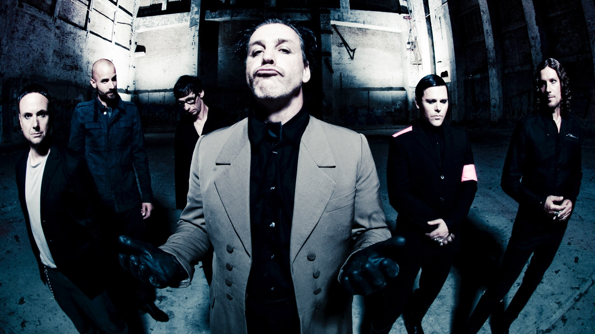
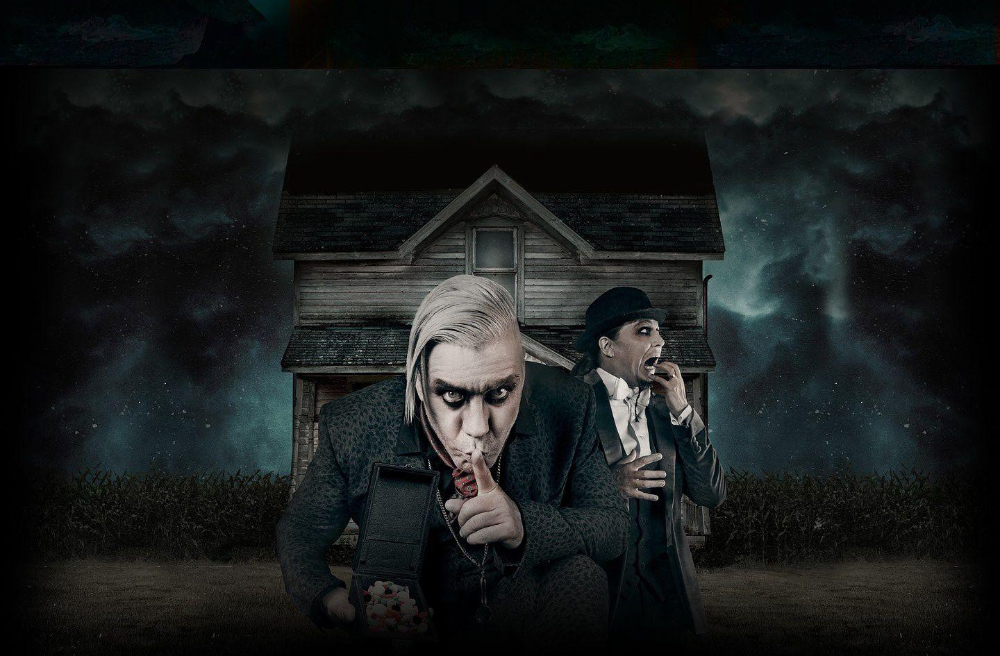
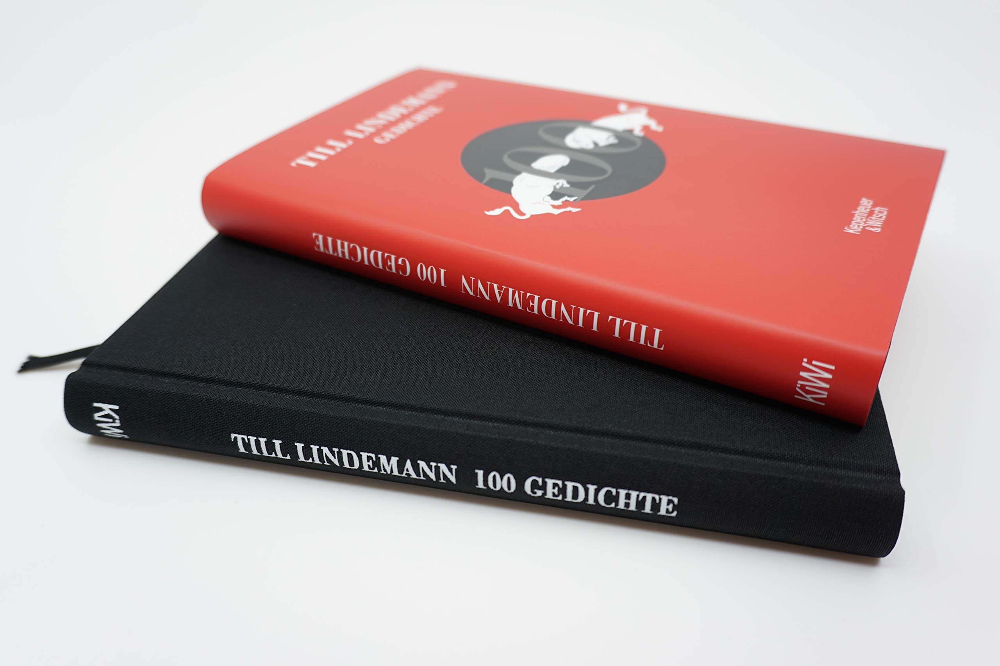
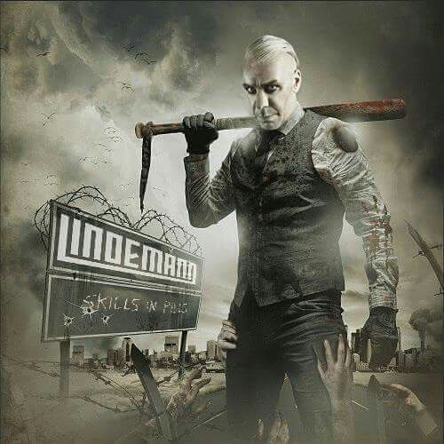
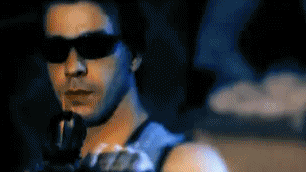

Como vocalista do Rammstein desde 1994, Till Lindemann lançou álbuns icônicos como "Herzeleid",
"Sehnsucht", "Mutter", "Reise, Reise", "Rosenrot", "Liebe ist für alle da", "Rammstein" e "Zeit". A
banda é conhecida mundialmente por seus shows pirotécnicos e letras impactantes.

Em dezembro de 2014, Till Lindemann anunciou juntamente com Peter Tägtgren das bandas Pain e
Hypocrisy seu novo projeto solo que tem o nome de "Lindemann". Em janeiro de 2015, a banda assinou
contrato com a Warner Music, e não com a Universal Music como era com o Rammstein. O Primeiro álbum
do projeto saiu em junho de 2015: Skills in Pills. Em 2020, o segundo álbum "F & M" foi lançado pela
Universal Music. O projeto foi encerrado em novembro de 2020, e como despedida foi lançado o álbum
ao vivo "Live in Moscow".

Além do Rammstein, Till lançou álbuns solo e com o projeto Lindemann, explorando diferentes estilos
musicais e líricos. Ele também é autor de livros de poesia e já atuou em filmes e projetos
artísticos diversos.

Ainda em 2020, Till iniciou seu projeto solo, usando seu próprio nome. Lançou em dezembro de 2020 um
cover de "Alle tage ist kein Sonntag", de Karel Gott, com a colaboração do violinista David Garrett.
Em Abril de 2021 lançou um cover da música russa "Любимый город" ("Lubimiy Gorod"), de Mark Bernes,
de 1939.

Em maio de 2021 foi lançada "Ich hasse Kinder". Em novembro de 2021, Till fez uma participação na
música "Le Jardin des Larmes", da cantora francesa Zaz. Em agosto de 2023, Till lançou o single e
vídeo de "Zunge", e anunciou um álbum com o mesmo nome para Novembro. No vídeo, Till realiza
interações frente-a-frente com tigres de circo, tem a boca costurada e faz o processo de endoscopia
para a filmagem do vídeo. Nenhum efeito especial ou dublê foi usado no vídeo.

Em setembro, Lindemann
lançou um single com três músicas, um vídeo com duração de 18 minutos também foi lançado incluindo
as três músicas. "Nass", "Schweiss" e "Lecker" foram lancadas em 29 de setembro de 2023. Em 25 de
outubro foi divulgado um teaser do video de "Sport Frei", lançado em 27 de outubro.
Zunge, NSL e
Sport Frei foram lançados independentemente por Till Lindemann, e não pela Universal Music, como de
costume. O material foi divulgado pela plataforma Distrokid. Seu primeiro álbum "Zunge", foi lançado
em 3 de novembro de 2023 em edição digital e em 17 de novembro em CD e 1 de dezembro em vinil. A
versão física incluiu "Ich hasse Kinder" no álbum.